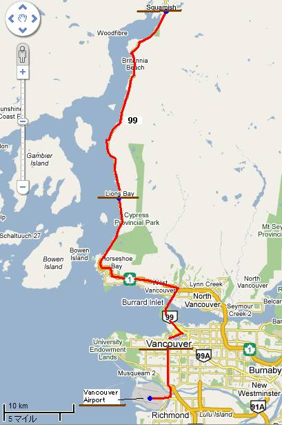
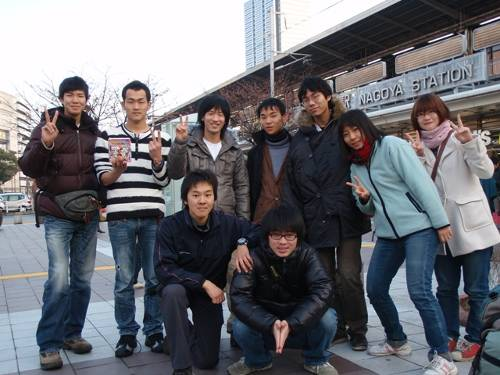
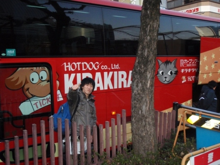
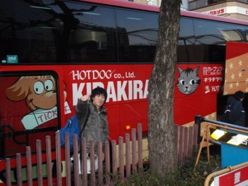
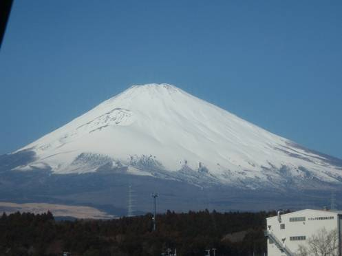
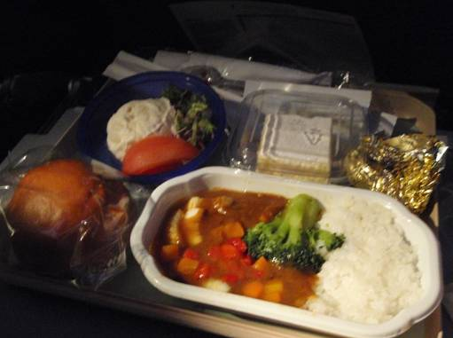
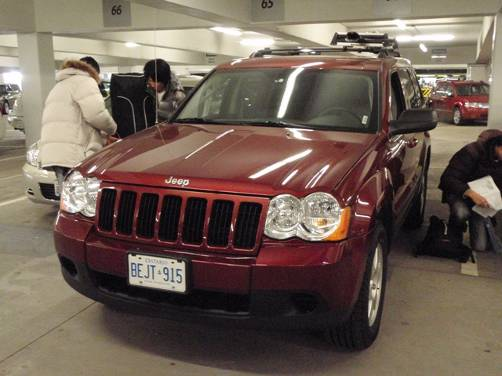
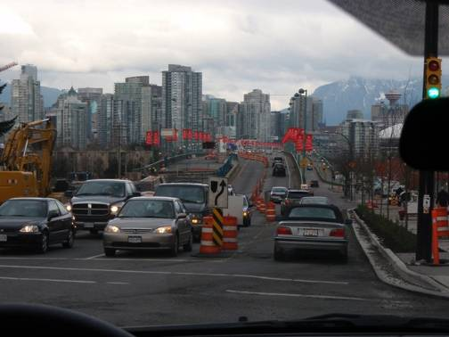
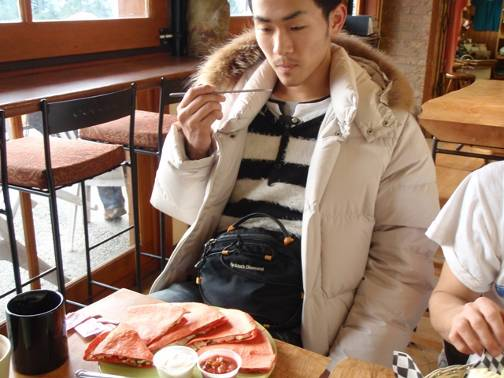
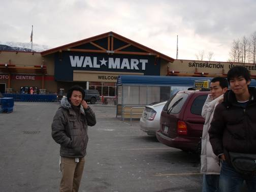

いよいよ、カナダ西部の旅が始まる。2009年2月12日、成田国際空港第2ターミナル。
18:25発、JAL018便。期待と少しの不安を胸に、まずはバンクーバーへと飛び立った。

成田空港へ到着

チェックインを済ませる

友人たちの見送り

出発前の記念撮影

ゲートへ向かう

搭乗するJAL018便
約8時間半のフライト。日付変更線を越え、再び2月12日の午前11時前にバンクーバー国際空港へと降り立った。
入国審査を終え、巨大なトーテムポールが出迎えてくれる到着ロビーへ。

バンクーバー到着

入国審査エリア

荷物を受け取り国内線へ
ここからさらに国内線に乗り換え、今回の旅の起点となるケロウナ(Kelowna)へと向かう。
プロペラ機から見下ろすカナダの山々は、すでに深い雪に閉ざされていた。

国内線ターミナルへ移動

ケロウナ行きのプロペラ機

機窓からの雪景色

ケロウナ空港に到着
ケロウナ空港に降り立つと、そこは零下の世界。
ここで今回の旅を20日間、6300kmにわたって支えてくれる相棒、Jeep Grand Cherokeeと対面する。
タイヤの溝を確認し、荷物を積み込み、まずは市街地のスーパーマーケットへと向かった。

相棒のJeep Grand Cherokee

雪道走行に備えたタイヤチェック

荷物の積み込み作業

SAFEWAYで買い出し

広大な店内に圧倒される
初日の宿、モーテルに到着。
しかし、ゆっくり休む暇はない。明日からの本格的な移動に備え、部屋いっぱいに広げた装備を整理・パッキングし直す。
スキー板、キャンプ道具、食料品……。このパズルを解かなければ旅は始まらない。

初日の宿泊先モーテル

部屋でのパッキング作業

装備の最終チェック

自炊道具の整理

なんとか形になった

長い一日が終わる